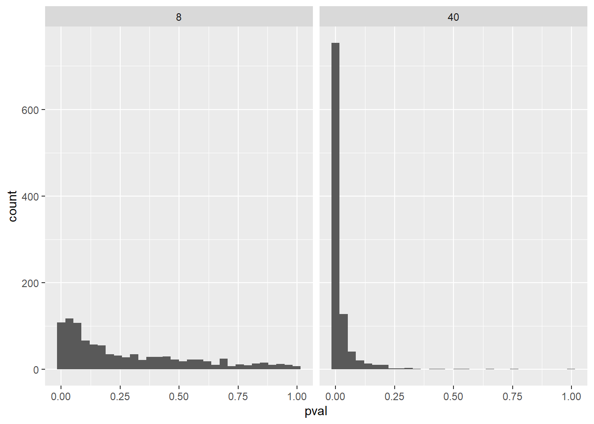
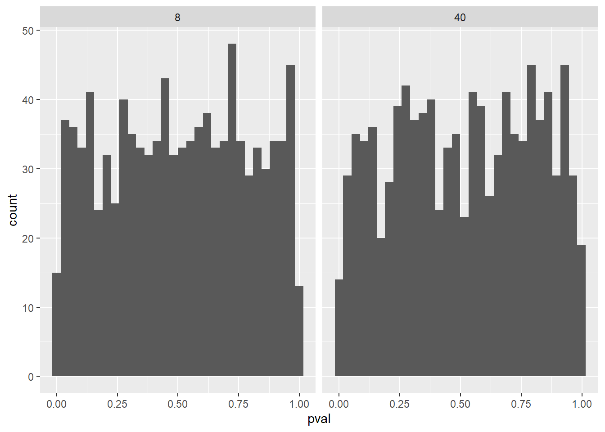

| Sample Size | Estimate | SE | t value | p value |
|---|---|---|---|---|
| 8 | 1.84 | 1.25 | 1.47 | 0.18 |
| 40 | 1.56 | 0.48 | 3.28 | 0.00 |
| Abriviations: SE, standardfeil | ||||
Assignment 3
Som vist i Table 1 har modellen med en utvalgsstørrelse på 8 tilfeldige tall fra populasjonen et gjennomsnittet på 1,84. Modellen med en utvalgsstørrelse på 40 tilfeldige tall fra populasjonen har derimot et gjennomsnitt på 1,56. Hvis vi ser på modellen med en utvalgsstørrelse på 8 fikk vi et standard avvik på 3,54. Vi har regnet ut standard error som er standard avvik/kvadratroten av utvalgsstørrelsen. Med andre ord vil det si at om vi gjentatte ganger tar et utvalg på 8 tilfeldige tall fra populasjonen, kommer gjennomsnittetene til utvalgene å ha et standard avvik på 1,25. Dersom vi gjentatte ganger i stedet velger et utvalg på 40 tilfeldige tall, vil gjennomsnittene av utvalgene ha et standard avvik på 0,48. T verdien måler størrelsen på differansen relativt til variasjonen i utvalgsdataen. Vi kalkulerer dette som gjennomsnittet/standard error. P verdi er sannsynligheten for å få et så ekstremt eller mer ekstremt t-tall enn observert.
Det er utvalgsstørrelsen som er avgjørende for de forskjellige resultatene i de ulike modellene. Ettersom vi regner ut standard error ved standard avvik/kvadratroten av utvalgsstørrelsen, vil en større utvalgsstørrelse gi en mindre standard error. Siden standard error er mindre vil t-verdien bli høyere da vi regner ut t-verdien som gjennomsnitt/standard error. En høyere t-verdi gir en lavere p-verdi og med det en større sannsynlighet for et signifikant resultat.
I statistikken kan man enten gjøre en nullhypotesetest som enten er en- eller tohalet. Ved å bruke en tohalet test vil man ta høyde for muligheten for både positivte og negativte effekter. Når signifikansgrensen er satt til 0,05, må effektstørrelsen være blant de 2,5% mest ekstreme observasjonene på den positive eller negative siden. På en enhalet test ser man derimot kun etter de 5% mest ekstreme observasjonene på en forutbestemt side.
- Som vist i Table 2 er standardavviket av gjennomsnittet til alle utvalgene svært likt gjennomsnittet til standardfeilen til alle utvalgene for både utvalgstørrelsen 8 og 40, men likere for utvalgstørrelsen 40. Dette skyldes at standardfeilen til gjennomsnittet fra et utvalg kalkulerer den gjennomsnittelige variasjonen (standardavviket) til en hypotestisk distribusjon av utvalg. I dette eksemplet har vi faktisk simulert en distribusjon av utvalg med en størrelse på 1000. Når vi derretter kalkulerer standardavviket til estimatene finner vi den egentlige variasjonen til en distribusjon av utvalg. Dermed blir standaravviket til estimatene og gjennomsnittet av standardfeilen veldig like. For å definere standardfeil ut ifra dette kan vi si at standardfeil er det estimerte standardavviket til estimatetet fra et utvalg i forhold til en hypotetisk distribusjon av utvalg.
| Sample size | SD of estimate | Average of SE |
|---|---|---|
| 8 | 1.0270090 | 1.0086488 |
| 40 | 0.4778172 | 0.4729543 |
| Abbriviations: SD, standarddiviation; SE, standarderror | ||
- I Figure 1 ser vi at når det er en gjennomsnittlig forskjell på 1.5 mellom treatment- og kontrollgruppen i populasjonen på 1.5 med et standardavvik på 3, vil en betydelig større andel av utvalgstørrelsen på 40 observasjoner vise en statistisk signifikant forskjell mellom gruppene enn en utvalgstørrelse på 8 observasjoner. Dette viser at utvalgstørrelsen har en stor påvirkningskraft på statistisk styrke. Statistisk styrke kan forklares som evnen/sannsyligheten til å forkaste en nullhypotese.

- Table 3 viser antall signifikante funn og den prosentvise andelen signifikante funn for utvalgstørrelsene 8 og 40.
| Sample size |
significant results |
significant results (%) |
|---|---|---|
| 8 | 219 | 21.9 |
| 40 | 877 | 87.7 |
- Som vi kan se i Table 4 så blir den statistiske styrken 0.232 og 0.869 iht utvalgstørrelsene på 8 og 40 når effektstørrelsen er 1.5 / 3 = 0.5. Vi kan tolke dette som at med en effektstørrelse på 0.5 må vi ha en nokså stor utvalgstørrelse, nærmere 40, for å ha en akseptabel statistisk styrke på > 0.8. utvalgstørrelsen på 8 viser en statistisk styrke som er lav og det vil dermed være usannsynlig at man klarer å fange opp en signifikant statistisk forskjell mellom gruppene.
| Sample Size | Significant Level | Power |
|---|---|---|
| 8 | 0.05 | 0.2320770 |
| 40 | 0.05 | 0.8693981 |
- Figure 2 viser antall utvalg som har en viss p verdi. Vi ser at spredningen er nokså gjevn for både utvalgstørrelsen på 8 og 40. Table 5 viser oss at 66 utvalg viser en falsk positiv om utvalgstørrelsen er på 8 observasjoner og 51 falske positive for en utvaglstørrelse på 40 observasjoner om man gjør 1000 reperterte studier. Dette betyr at sannsynligheten for å få et falskt positivt funn er større med en liten utvalgstørrelse til sammenligning med en større utvalgstørrelse.

| Sample Size | Significant Results |
|---|---|
| 8 | 51 |
| 40 | 41 |